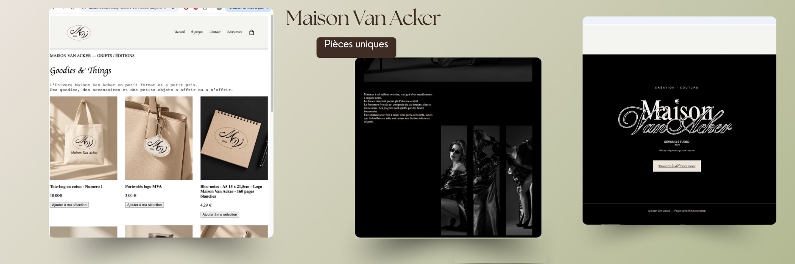

01 — À PROPOS
Je suis une personne créative, curieuse et investie, qui aime apprendre et découvrir de nouvelles choses. J'aime imaginer des idées, expérimenter et donner vie à des projets concrets. Je suis particulièrement attirée par les univers visuels, le design et la création.
Je développe actuellement mes compétences en créant le site internet de ma propre marque. Ce projet me permet d'apprendre en pratiquant, de gagner en autonomie et de découvrir les différentes étapes de création d'une interface web. Je souhaite rejoindre ATI4Group en alternance pour continuer à progresser, partager mes idées et participer à des projets concrets.
